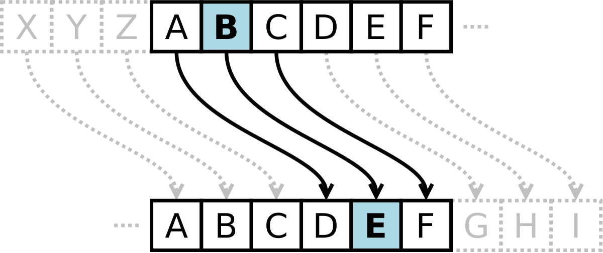
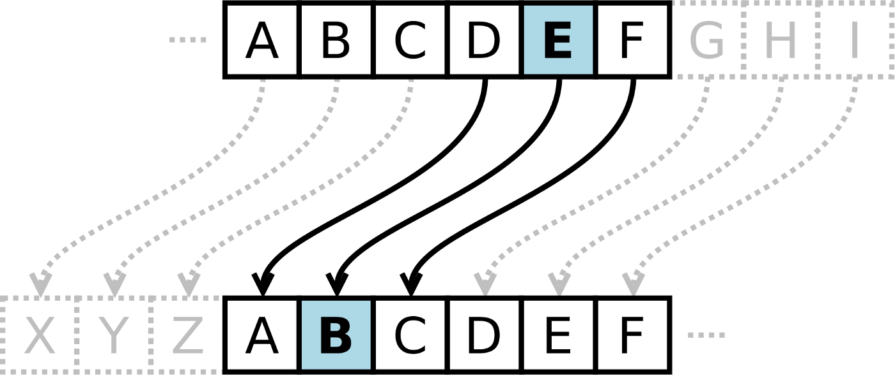

Projeto de criptografia de palavras e mensagens com base na técnica da substituição
A encriptação simétrica, também chamada de encriptação convencional ou encriptação de chave única, era o único tipo em uso antes do desenvolvimento da encriptação por chave pública na década de 1970.
IMPORTANTE: vide imagem do modelo simplificado de encriptação simétrica.
 TÉCNICA: TÉCNICA DE SUBSTITUIÇÃO OU CIFRAGEM DE CESAR
Uma técnica de substituição é aquela em que as letras do texto claro são substituídas por outras letras, números ou símbolos. Se o texto claro for visto como uma sequência de bits, então a substituição envolve trocar padrões de bits de texto claro por padrões de bits de texto cifrado.
CIFRA DE CÉSAR: O uso mais antigo que conhecemos de uma cifra de substituição, e o mais simples, foi feito por Júlio César. A cifra de César envolve substituir cada letra do alfabeto por aquela que fica N (geralmente 3) posições adiante.
Supondo que o Offset é 3